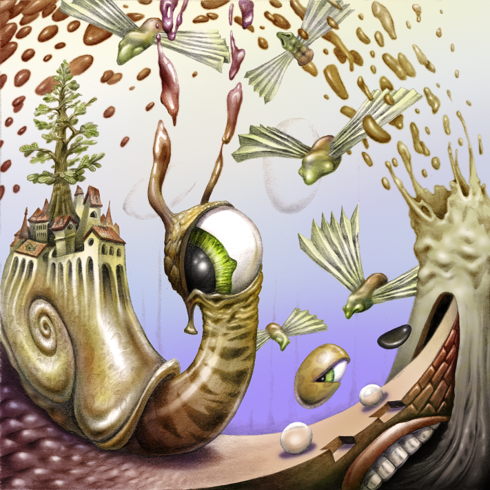

My Name is Gerlof Fokkema. I am a student at TU Delft and employee at gnTel.
Happy:
Sad:
Taken from the song Drop Out by Infected Mushroom:
But they all do sort of the same thing, and that is rearrange what you thought was real, and they remind you of the beauty of pretty simple things.
You forget, because you're so busy going from a to z, that there's 24 letters in between.